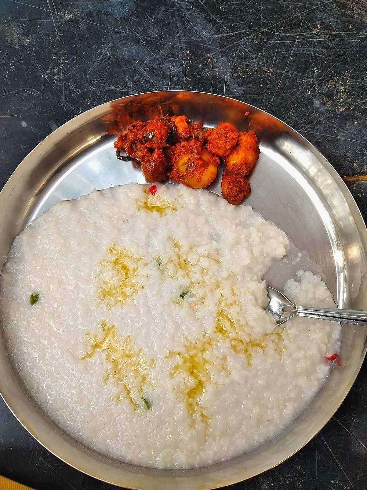

Vagharelo Bhaat
yesterday's rice fried up with mustard seeds, potato and peas into a proper meal

Contains: mustard
Ingredients
Quantities for 4.
- 600g cooked and cooled, about 4 cups Riceday-old rice from the fridge, grains separate
- 3 tbsp Neutral Oil
- 1 tsp Mustard Seeds
- 1 tsp Cumin Seeds
- 1/4 tsp Asafoetidause compounded-free hing to keep this gluten-free
- 10 Curry Leaves
- 3, slit Green Chilli
- 1 medium, finely chopped Onion
- 1 medium, cut into 1cm dice Potato
- 100g Peas
- 1/2 tsp Turmeric
- 1 tsp Chilli Powder
- 1 tsp Sugar
- to taste Salt
- 1 tbsp juice Lemon
- 4 tbsp, chopped Coriander Leavesoptional
Cookware
kadhai, stovetop
Checked against the ingredient list for ten allergens: milk, egg, fish, crustaceans, tree nuts, peanuts, sesame, mustard, soy and gluten. Brands vary, so read the label on anything new to you.
Before you start
- Use cold rice straight from the fridge. Fresh warm rice turns to paste the moment it hits the pan.
- Break up any clumps with wet fingers before you start, so you are not doing it in a hot pan.
- Dice the potato small (1cm) or it will still be raw when the rice is hot.
Method
- Heat the oil in a kadhai and crackle the mustard seeds, then add the cumin, asafoetida, curry leaves and slit chillies.
- Add the onion and cook 4 minutes over medium-high heat until the edges colour.
- Add the diced potato, turn to coat, cover and cook 6-7 minutes until a piece gives easily to a fork.Cover the pan for this. The potato steams tender rather than frying dry and hard.
- Stir in the peas, turmeric and chilli powder and cook 2 minutes.
- Add the cold rice, salt and sugar and fold gently with a flat spatula until every grain is yellow.Fold, do not stir. A spoon stirred in circles smashes the grains.
- Raise the heat and leave the rice undisturbed for 2 minutes so the bottom layer catches slightly, then fold once.
- Cook 2 minutes more until the rice is hot all the way through and smells toasted.
- Off the heat, stir in the lemon juice and coriander and serve with plain yogurt or chaas.
Storage
Keeps 2 days refrigerated. Reheat covered in a pan with 1 tbsp water over medium heat; the microwave dries the grains at the edges.
Nutrition Good estimate
Low protein: 7 g a serving, 8% of the calories
| Per serving186 g | Per 100 g | |
|---|---|---|
| Calories | 370 kcal | 199 kcal |
| Protein | 7.0 g | 4 g |
| Carbohydrate | 60.1 g | 32 g |
| of which sugars | 4.5 g | 2 g |
| Fibre | 3.7 g | 2 g |
| Fat | 11.3 g | 6 g |
| of which saturated | 1.2 g | 1 g |
| of which unsaturated | 9.4 g | 5 g |
Nearest database match used for asafoetida, curry leaves. Estimated from raw ingredients using USDA FoodData Central.
More like this: Quick Indian recipes (30 min) · Vegan Indian recipes · Vegetarian Indian recipes · Gluten-free Indian recipes · Dairy-free Indian recipes · Gujarati recipes
Times, yields, allergens and nutrition are guidance. Use your own judgement on doneness and on storing. More in About.